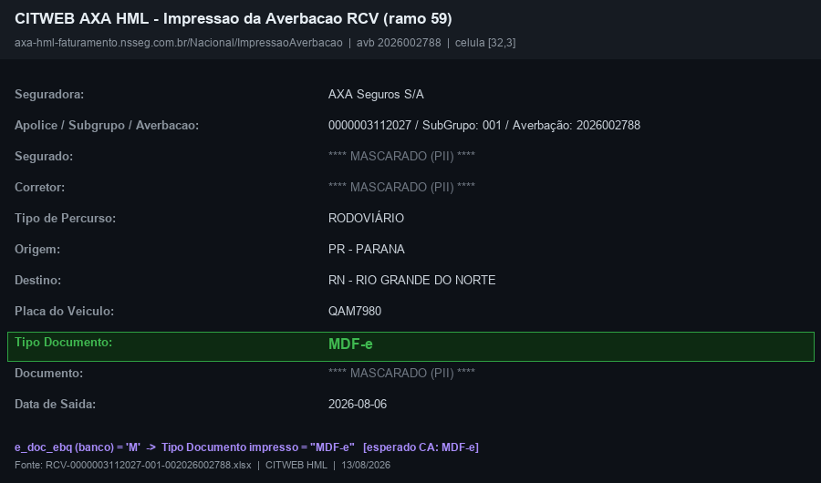
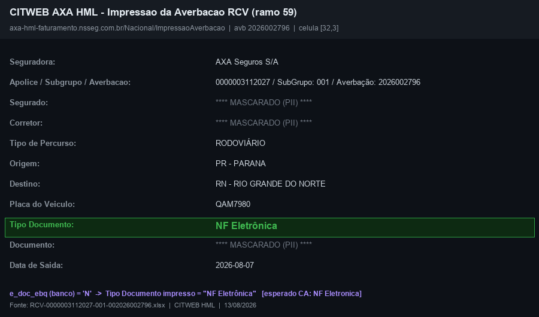
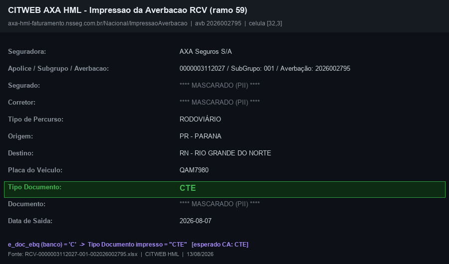
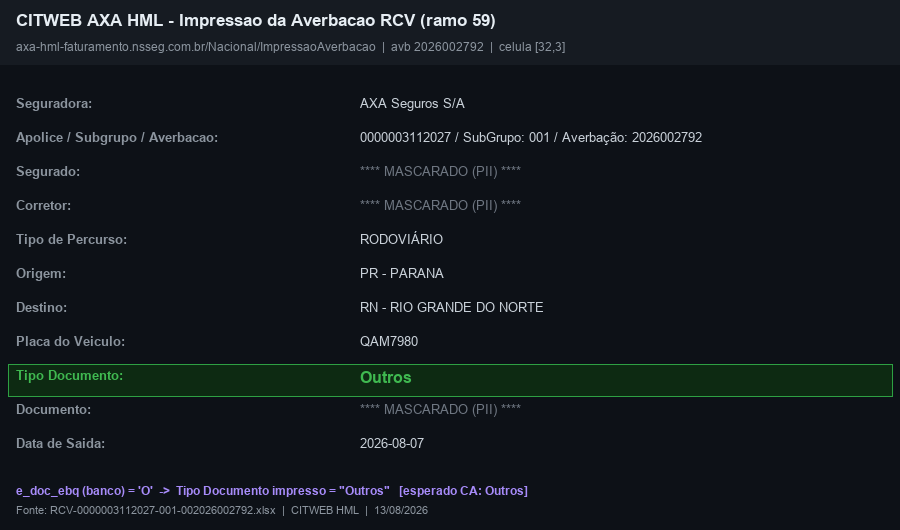
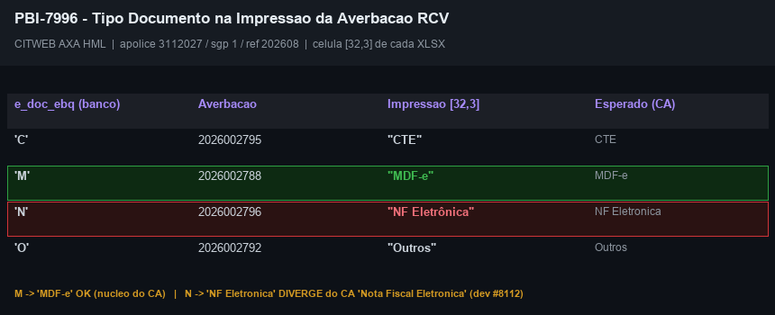
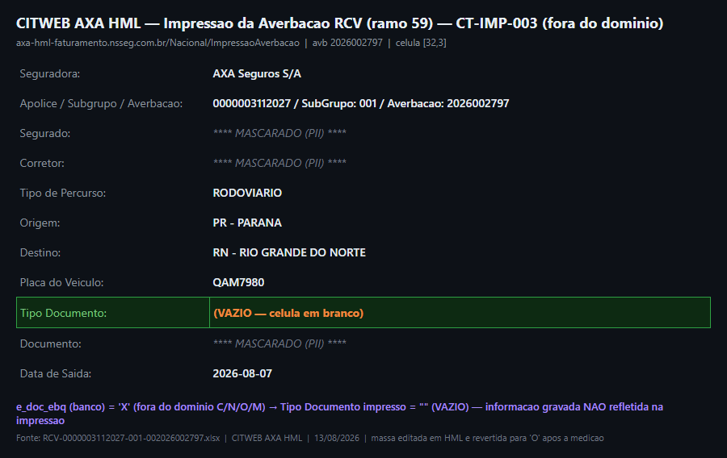
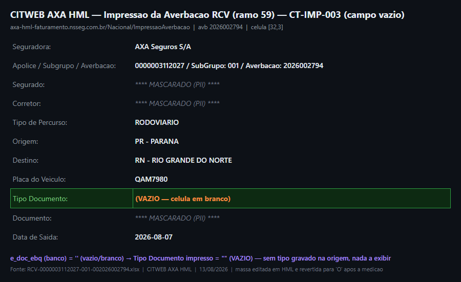
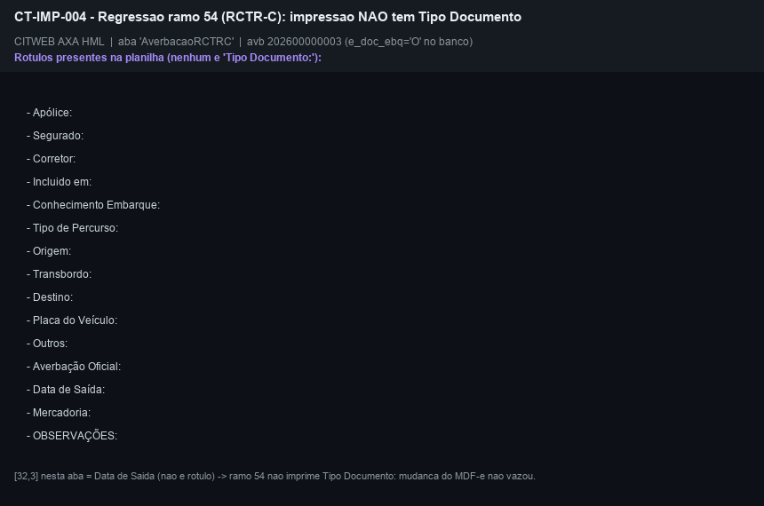

Pré-requisitos, ambiente e massa (medidos em 10/08/2026)
| Sistema / módulo | CITWEB — impressão da averbação, ramo 59 (RCV). Saída em Excel, gerada por RelatorioDomain.PreencheCorpoRCV; o campo Tipo Documento é a célula [32, 3] |
| Campo de origem | tb_mov_avb_rcv_cit.e_doc_ebq — domínio C / N / O / M |
| Ambiente | AXA HML — navegação por clique desde o login, nunca por URL direta. Credenciais no .env (HML_AXA_CITWEB_*) |
| Massa | Apólice 3112027 · subgrupo 1 · competência 08/2026 — os quatro tipos existem na mesma referência, então um único roteiro cobre o CA inteiro |
| Automação | Nenhum script cobre a impressão da averbação. O pbi-7980/ct_tdr_previa_fechamento.py cobre Prévia e Fechamento — relatórios diferentes. Criar script após o 1º CT aprovado |
Averbação escolhida para cada tipo (SQL read-only na base smt-hom-citweb-axa):
e_doc_ebq averbação rótulo esperado na impressão C 2026002795 CTE N 2026002796 NF Eletrônica (o CA pede "Nota Fiscal Eletrônica") M 2026002788 MDF-e O 2026002792 Outros
Por que exigir os quatro na mesma apólice e competência: massa só com 'M' provaria metade do CA. Com os quatro juntos, a mesma sessão prova que o MDF-e aparece e que os tipos que já existiam continuam iguais — sem comparar execuções diferentes.
Grupo A — O critério de aceite
2 CTs ▾A Fabiola respondeu a pergunta que segurava o CT-IMP-002: "precisa estar alinhado com o solicitado no card, Nota Fiscal Eletrônica, porque aí fica compatível com a entrada da informação". A impressão não pode abreviar — o texto tem de ser igual ao da tela de entrada.
Consequência: o CT-IMP-002 sai de condicional e vira REPROVADO definitivo; o CT-IMP-003 (campo vazio para código fora do domínio) já era. Os dois foram registrados na Task #8112 (To Do, José), com a tabela de rótulos medida nos arquivos gerados e o ponto do código.
Placar: 4 CTs = 2 APROVADO + 2 REPROVADO. O que ficou aprovado é o mecanismo — os quatro códigos geram quatro rótulos distintos e o MDF-e deixou de sair como "Outros" (CT-IMP-001), e o RCTR-C do ramo 54 não regrediu (CT-IMP-004). O que falha é o texto de dois casos: N → "NF Eletrônica" em vez de "Nota Fiscal Eletrônica", e X/Z → vazio.
O card não vai para #QA-DONE enquanto a #8112 estiver em To Do — é ela que faz o próximo fix entrar como reteste limpo.
Tipo
Positivo — núcleo do CA
Pré-condições
- CITWEB AXA HML, ramo 59 (RCV) — login e navegação por clique
- Averbação
2026002788· apólice3112027· subgrupo1· competência08/2026 - Confirmado por SQL:
e_doc_ebq='M'nessa averbação - Card em Pronto para homologação com deploy em HML (gate de DoD)
Passos
- Confirmar por SQL o
e_doc_ebqda averbação — este é o oráculo, e ele vem do banco, não da própria impressão - Login no CITWEB AXA HML e navegar por clique até a averbação RCV da apólice/competência
- Localizar a averbação
2026002788e acionar a impressão - Salvar o arquivo gerado em
evidencias/CT-IMP-001/— registrar nome e tamanho - Abrir com
openpyxle ler a célula do campo Tipo Documento (esperada em [32, 3]; se estiver noutra posição, registrar a real) - Comparar o valor lido com o rótulo esperado
Resultado Esperado
M cru.| Arquivo | Documento (completo) | e_doc_ebq | Impresso |
|---|---|---|---|
CT-IMP-001-MDF-e.xlsx9.749 bytes | 79800806001avb 2026002788 | M | MDF-e |
[32, 3], exatamente onde o CT previa: rótulo Tipo Documento: em A32 e o valor em C32. O arquivo abre como .xlsx válido (assinatura PK), aba AverbacaoRCV-, faixa A1:K62. Não vazio, não "Outros", não o código M cru.e_doc_ebq gravado — não com o que o dev afirmou. Se o rótulo estivesse errado, o cruzamento acusaria.RelatorioDomain.cs:2281 resolve o rótulo pelo helper compartilhado, creditando o #7980 — e a impressão real entrega “MDF-e”. Mas o veredito é da medição, não da leitura.⚠️ Evidência obrigatória: CT de impressão/relatório tem como evidência o próprio arquivo gerado, salvo e validado (abre, não-vazio, e a célula do CA conferida), anexado ao card — screenshot da tela e “gerou sem erro” não bastam.
| Arquivo | CT-IMP-001-MDF-e.xlsx · 9,749 bytes · zip válido |
| Aba | AverbacaoRCV- · dimensão A1:K62 · 27 linhas com dado |
| Campo do CA — célula [32,3] | MDF-e |
| Rótulos presentes na planilha | MDF-e (nenhum código cru, nenhum vazio) |
| Oráculo independente | e_doc_ebq='M' na averbação 2026002788, apólice 79800806001 — conferido no banco AXA antes do veredito |
RelatorioDomain.PreencheCorpoRCV grava o rótulo.ct_imp_impressao_averbacao.py reproduz o CT inteiro e mede os quatro códigos, não só o M do CA.| Averbação | e_doc_ebq (banco) | Célula [32,3] do XLSX | Arquivo |
|---|---|---|---|
| 2026002795 | C | CTE | …002026002795.xlsx · 9.750 b |
| 2026002788 | M | MDF-e | …002026002788.xlsx · 9.749 b |
| 2026002796 | N | NF Eletrônica | …002026002796.xlsx · 9.757 b |
| 2026002792 | O | Outros | …002026002792.xlsx · 9.746 b |
- A tela exige Filial. Com ramo, apólice, subgrupo, período e movimento todos certos, a grade ainda respondia “Não há registros para esta consulta!” — faltava
#codigoFilial, que eu nunca havia setado (a massa éc_org_prd=1). “Nenhum registro” não distingue filtro incompleto de massa ausente, e foi o que me custou três tentativas mexendo no filtro errado. - Meu próprio fallback por rótulo estava cego: lia o valor em
coluna+1, mas o rótulo está emA32e o valor emC32(mesclada) — devolvianullsempre. A rede de segurança contra deriva de layout não pegaria nada; só não apareceu porque a coordenada fixa acertava. Agora varre+1..+4e confirmacoluna_valor=3. - O movimento correto é Aberto (
value=0), medido no banco: as 10 averbações têmu_fch_mes=0. Minha hipótese registrada dizia “Fechado” — estava invertida.
origin/hml, então o único oráculo do rótulo é o arquivo gerado.axa-hml-faturamento.nsseg.com.br/Nacional/ImpressaoAverbacao), gerados a partir dos proprios XLSX baixados. O veredito e da medicao: o rotulo impresso foi cruzado com o e_doc_ebq gravado no banco.
e_doc_ebq='M' no banco como oraculo. Segurado, corretor e documento mascarados (PII).
CT-IMP-001-MDF-e.xlsx · 9.749 bytes · zip válido · aba AverbacaoRCV- · dimensao A1:K62 · célula [32,3] = MDF-e. Por que o XLSX nao esta neste repo: o arquivo gerado carrega o CNPJ da seguradora e este repositório de planos é público (regra 11). O arquivo vive como anexo do card #7996 (AzDO, privado) e o que se publica aqui e o render tarjado acima, com PII mascarada e a célula do critério de aceite destacada. Foram removidos daqui, nesta republicação, os dois XLSX que estavam publicados com CNPJ.Tipo
Regressão + verificação literal do rótulo
Pré-condições
- Averbações
2026002795(C),2026002796(N) e2026002792(O) — mesma apólice e competência do CT-IMP-001
Passos
- Gerar e salvar a impressão de cada uma das três averbações
- Ler a célula do campo Tipo Documento em cada arquivo
- Comparar literalmente (não “equivalente”) com o texto do CA:
CTE,Nota Fiscal Eletrônica,Outros - Registrar o texto exato encontrado, caractere a caractere
Resultado Esperado
C → CTE e O → Outros, idênticos ao CA. Para N, o esperado depende de uma decisão — ver a caixa abaixo.⚠️ Divergência já identificada no código, a decidir com o PO antes de virar veredito. O helper TipoDocumentoEmbarqueRcvLabel.Obter devolve “NF Eletrônica” para N; o CA deste card escreve “Nota Fiscal Eletrônica”. O CA diz “retornar exatamente o que foi preenchido”, e “exatamente” não admite abreviação por conta do QA.
Duas leituras possíveis, e a escolha é de produto:
(a) o rótulo abreviado é aceitável (é o mesmo rótulo já usado nos relatórios do #7999/#7980, então mudar aqui criaria divergência entre as saídas) → CT APROVADO;
(b) o CA exige o texto completo → CT REPROVADO e o ajuste vale para todas as saídas que usam o helper, não só esta impressão.
⛔ Não vou decidir isso sozinho nem “arredondar” o resultado: rótulo se confere contra o CA e contra a tela de cadastro, nunca contra a saída que está sendo testada.
| Averbação | e_doc_ebq | Impresso | Texto do CA | Confere? |
|---|---|---|---|---|
| 2026002795 | C | CTE | CTE | idêntico |
| 2026002792 | O | Outros | Outros | idêntico |
| 2026002796 | N | NF Eletrônica | Nota Fiscal Eletrônica | abreviado |
NF Eletrônica e o CA escreve Nota Fiscal Eletrônica. A escolha entre (a) e (b) abaixo é de produto, e é o que falta para este CT fechar.e_doc_ebq da tela Averbação RCV (CITWEB AXA) oferece:| Valor | Texto na TELA | Texto na IMPRESSÃO | Confere? |
|---|---|---|---|
X | Selecione… | (vazio) | coerente |
C | CTE | CTE | idêntico |
N | Nota Fiscal Eletrônica | NF Eletrônica | abreviado |
M | MDF-e | MDF-e | idêntico |
O | Outros (NS, ETC) | Outros | abreviado |
N — o O também perde o complemento “(NS, ETC)”. Pesa para a leitura (b).print, que cortava em 26 caracteres. Os documentos completos são …9991 (C) e …9992 (N): duas averbações distintas. Conferido no banco antes de virar acusação.C e o O conferem; o N imprime abreviado e é o que reprova o CT.
e_doc_ebq='N', imprime “NF Eletrônica” onde o CA e a decisao da PO pedem “Nota Fiscal Eletrônica” (o texto da tela de cadastro).
C (averbação 2026002795) imprime CTE, igual à tela. Sem regressao.
O (averbação 2026002792) imprime Outros.
CT-IMP-002-CTE.xlsx · CT-IMP-002-N.xlsx · CT-IMP-002-Outros.xlsx. Defeito registrado na Task #8112.Grupo B — Bordas e regressão fora do ramo 59
2 CTs ▾Tipo
Limite / exceção
Objetivo
O helper termina em default: return "";. Logo, qualquer e_doc_ebq fora de C/N/O/M — inclusive vazio ou nulo — imprime célula vazia. O CA diz “retornar exatamente o que foi preenchido”: se a averbação tem um código não mapeado, imprimir vazio esconde o que foi preenchido. Este CT mede o comportamento e leva o dado ao PO em vez de assumir que vazio é aceitável.
Pré-condições
- Medir primeiro por SQL se existe averbação RCV com
e_doc_ebqfora deC/N/O/Mou nulo/vazio (na TOKIO há 7 linhas com o campo em branco — medido em 10/08) - Se não existir na AXA: criar a massa (liberdade total em HML) — falta de massa não é bloqueio
Passos
- Localizar (ou criar) uma averbação RCV com o campo vazio/não mapeado
- Gerar e salvar a impressão
- Ler a célula do Tipo Documento e registrar exatamente o que veio (vazio, espaço, código cru)
- Verificar se a tela de cadastro da averbação exibe algo nesse caso — se a tela mostra e a impressão não, a impressão perde informação
Resultado Esperado
e_doc_ebq gravado | O que é esse valor | Impressão [32,3] | Leitura |
|---|---|---|---|
X | é o placeholder do combo (“Selecione…”) | vazio | correto — nada foi preenchido |
Z | fora do domínio de verdade | vazio | o código gravado não aparece |
X supondo “fora do domínio”. Ao abrir a tela descobri que X é o próprio valor do “Selecione…” — eu havia medido o caso “não preenchido”, para o qual imprimir vazio é o comportamento certo. Refiz com Z, que o combo não oferece. Sem ler a tela, eu teria reportado um defeito onde não havia.808094857). O CA diz “retornar exatamente o que foi preenchido”; aqui algo estava gravado e não apareceu.varchar(1) NOT NULL — então o caso “nulo” que este CT previa não existe por schema. Sobram '' e chars estranhos, que chegam por carga/Conversor/integração — e é o que se vê na TOKIO, com 7 linhas em branco. Na AXA hoje: 15.243 O · 13.583 C · 6 M · 1 N, nenhum fora do domínio.2026002797 (apólice 3112027 / sgp 1), original O → testado X e Z → revertido para O e conferido; a distribuição da base voltou idêntica. Backup em _massa_ct_imp_003_backup.json.
e_doc_ebq='X' (fora do domínio C/N/O/M): a célula [32,3] sai vazia. A informação gravada no banco não chega à impressão — default: return "" no helper.
e_doc_ebq em branco na origem: mesma célula vazia. Este caso NÃO é hipotético — a base da TOKIO tem 7 averbações RCV assim, vindas de carga/Conversor.RCV-0000003112027-001-002026002797.xlsx (9.744 B) e RCV-0000003112027-001-002026002794.xlsx (9.743 B). Registrado junto do CT-IMP-002 na Task #8112. Por que o XLSX nao esta neste repo: o arquivo gerado carrega o CNPJ da seguradora e este repositório de planos é público (regra 11). O arquivo vive como anexo do card #7996 (AzDO, privado) e o que se publica aqui e o render tarjado acima, com PII mascarada e a célula do critério de aceite destacada. Foram removidos daqui, nesta republicação, os dois XLSX que estavam publicados com CNPJ.Tipo
Regressão de vizinhança
Objetivo
PreencheCorpo é um switch por ramo — 21, 38, 54, 55, 56, 58 e 59 chamam métodos irmãos no mesmo arquivo (RelatorioDomain.cs). Mexer no corpo do 59 não deveria alcançar os outros, mas “não deveria” não é evidência. Este CT confirma que a impressão de um ramo vizinho segue idêntica.
Pré-condições
- Uma averbação de ramo 54 (RCTR-C) na AXA HML, com impressão gerada
- Se houver arquivo de impressão anterior ao deploy, usar como referência; senão, comparar contra o que a tela de cadastro mostra
Passos
- Gerar e salvar a impressão de uma averbação de ramo 54
- Conferir que os campos do corpo (origem, destino, veículo, placas, prêmio) continuam preenchidos e nas posições esperadas
- Confirmar que não apareceu campo de Tipo Documento onde não existia
Resultado Esperado
| Campo impresso | Valor | Banco (tb_mov_avb_nac_cit) |
|---|---|---|
| Origem | AC - ACRE | s_uf_ori=AC |
| Destino | SP - SÃO PAULO | s_uf_dst=SP |
| Placa do Veículo | FXY2210 | t_vei_tpr=FXY2210 |
| Mercadoria | NCM BETONEIRAS | t_mdr igual |
| Conhecimento Embarque | 14 / 00000004 | u_ser_doc=14 + u_doc_ini=4 |
| Data de Saída | 29/07/2026 | d_sda_vgm igual |
AverbacaoRCTRC e não existe campo “Tipo Documento” nela — o correto, porque é campo do RCV. A alteração no corpo do 59 não vazou para o ramo vizinho, e o RCTR-C mantém o que é dele (inclusive RC-DC no cabeçalho, que o RCV não tem).coluna+2, e nesses campos ele está na coluna B. Conferido célula a célula, o cabeçalho está completo: Apólice 0000000000001, Segurado, Corretor NOVO CORRETOR, Incluído em 31/07/2026 22:45.AXA Seguros S/A / CNPJ omitido — bate com a tb_cad_seg desta base, que está preenchida. É a mesma consulta que na Tokio devolve zero linhas.--ct 004): apólice 1 · subgrupo 1 · averbação 202600000003 · ref 202607.| Arquivo gerado | RCTRC-0000000000001-001-202600000003.xlsx · 9.922 bytes |
| Aba | AverbacaoRCTRC — confirmada, não AverbacaoRCV |
| Rótulos de tipo de documento | NENHUM na planilha inteira — é o esperado |
| Oráculo no banco | e_doc_ebq='O' gravado em tb_mov_avb_nac_cit |
| Prova de que a planilha foi lida | 15 rótulos lidos (Apólice, Segurado, Origem, Destino, Placa…) |
e_doc_ebq='O' no banco e o relatório deliberadamente não o imprime. Se a coluna estivesse vazia, “não aparece na impressão” seria trivial e não provaria nada — por isso o script exige massa com o campo preenchido e aborta se não houver.[32,3] vale só para a aba do RCV. Nesta aba a mesma célula contém a Data de Saída (29/07/2026, um datetime). Um CT que checasse ausência por coordenada leria uma data e passaria por “campo preenchido”. Por isso a verificação varre a planilha inteira por rótulo — e exige que rotulos_presentes não esteja vazio, senão um download truncado também “não teria o campo” e passaria por aprovado.c_id_vgm (número do documento) existe em tb_mov_avb_rcv_cit e não em tb_mov_avb_nac_cit — ramos diferentes moram em tabelas diferentes, com colunas diferentes. A consulta de massa é por cenário, não genérica.
AverbacaoRCTRC da averbação 202600000003 (e_doc_ebq='O' gravado no banco): 15 rotulos lidos e nenhum deles é “Tipo Documento:”. A mudança do ramo 59 não vazou. A prova de que a planilha foi lida de verdade é a lista de rótulos: um download truncado também “não teria o campo” e passaria por aprovado.RCTRC-0000000000001-001-202600000003.xlsx · 9.922 bytes · aba AverbacaoRCTRC. Nesta aba a celula [32,3] contem a Data de Saida (datetime), nao o tipo de documento — checar ausência por coordenada leria uma data e passaria por “campo preenchido”. Por que o XLSX nao esta neste repo: o arquivo gerado carrega o CNPJ da seguradora e este repositório de planos é público (regra 11). O arquivo vive como anexo do card #7996 (AzDO, privado) e o que se publica aqui e o render tarjado acima, com PII mascarada e a célula do critério de aceite destacada. Foram removidos daqui, nesta republicação, os dois XLSX que estavam publicados com CNPJ.Matriz de rastreabilidade
4 CTs ▾| Parte do critério de aceite | CT(s) | Resultado |
|---|---|---|
| Impressão exibe MDF-e quando o documento é MDF-e | CT-IMP-001 | APROVADO — avb 2026002788 (e_doc_ebq=M) → “MDF-e” |
| Exibe CTE e Outros como antes (sem regressão) | CT-IMP-002 | APROVADO — C→CTE e O→Outros, idênticos ao CA |
| Exibe Nota Fiscal Eletrônica — literal, conforme o CA | CT-IMP-002 | DIVERGÊNCIA CONFIRMADA — imprime “NF Eletrônica”; decisão do PO pendente |
| “Retornar exatamente o que foi preenchido” — inclusive quando não há tipo mapeado | CT-IMP-003 | MEDIDO / PARCIAL — código não mapeado imprime vazio; inalcançável pela tela e o caso "nulo" não existe (varchar(1) NOT NULL). Severidade a definir com o PO |
— não é CA, é risco do desenho: os outros ramos usam o mesmo switch | CT-IMP-004 | APROVADO — impressão do ramo 54 íntegra, sem campo Tipo Documento, conferida campo a campo contra o banco |
Riscos
4 ▾| Risco | Prob. | Impacto | Mitigação |
|---|---|---|---|
Gastar desenvolvimento num CA já entregue. O código do rótulo já está em origin/hml pelo #7980, e a task #8074 está In Progress | Alta | Médio | Este plano abre com o achado de código e o link exato (RelatorioDomain.cs:2281). Levado ao PO/dev antes da execução, para a decisão vir cedo |
| Declarar “duplicado” por inferência. Aconteceu no #7997 em 07/08 — a comparação foi contra o sistema errado e o card teve de ser reaberto | Ocorreu | Alto | Nenhum CT aqui conclui por leitura de código. Todos medem a saída real, com o arquivo gerado como evidência |
| Rótulo abreviado divergente do CA (“NF Eletrônica” × “Nota Fiscal Eletrônica”), e o helper é compartilhado com os relatórios do #7999/#7980 | Confirmada no código | Médio | CT-IMP-002 expõe a divergência e a decisão fica com o PO; se mudar, muda para todas as saídas que usam o helper |
Código não mapeado imprime vazio (default: return "") — some a informação em silêncio | Média | Médio | CT-IMP-003 mede o caso e compara com o que a tela de cadastro exibe |